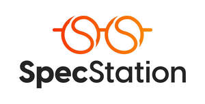
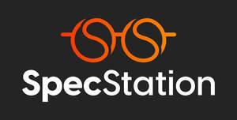
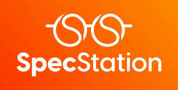
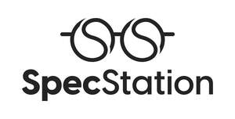

Trade Mark Journal No.2025/022 30 May 2025
UK00004197909 1 May 2025 (9,21,35,40,44)
Mark 1

Mark 2

Mark 3

Mark 4

- Class 9
- Glasses; Spectacles [glasses]; Lenses for glasses; Magnifying glasses; Prescription glasses; Glasses frames; Frames for glasses; Optical glasses; Eye glasses; Anti-glare glasses; Glasses, sunglasses and contact lenses; Frames for eye glasses; Replacement lenses for glasses; Sun glasses; Corrective glasses; Magnifying glasses [optics]; Protective glasses; Reading glasses; Spectacle glasses; Sports glasses; Glasses for sports; Eyeglasses; Glasses cases; Lenses for eyeglasses; Covers for glasses; Frames for spectacles and sunglasses; Sight glasses [optical]; Magnifying eyeglasses; Children's eye glasses; Sports' glasses; Lenses for sunglasses; Optical lenses for eyeglasses; Frames for eyeglasses; Antiglare glasses (anti-glare); Lenses for spectacles; Sunglasses; Cases for eyeglasses and sunglasses; Prescription eyeglasses; Optical lenses for use with sunglasses; Optical lenses for sunglasses; Boxes [cases] for glasses; Cases for children's eye glasses; Goggles; Frames for sunglasses; Sunglasses frames; Prescription sunglasses; Cases for spectacles and sunglasses; Optical lenses for spectacles; Chains for spectacles and for sunglasses; Chains for spectacles and sunglasses; Glass ophthalmic lenses; Frames for spectacles; Prescription spectacles; Clip-on sunglasses; Sunglass lenses; Magnifying lenses; Protective eyeglasses; Eyeglass lenses; Colour blindness correction glasses; Spectacles; Prescription eyewear; Anti-glare spectacles; Monocle frames; Straps for sunglasses; Eyewear; Eyeglasses for sports; Plastic lenses; Chains for eyeglasses; Prescription goggles for swimming; Spectacles [optics]; Cords for eyeglasses; Magnetic clip-on sunglass lenses; Fashion eyeglasses; Optical glass; Anti-dazzle spectacles; Cases for eyeglasses; Antireflection coated eyeglasses; Silicone nose pads for eyeglasses; Cases for children's eyeglasses; Eyeglass frames; Fashion sunglasses; Eyewear pouches; Cords for sunglasses; Corrective eyewear; Cases for sunglasses; Eyeglass temples; Eyeglass lanyards; Eyewear cases; Cases for eyewear; Sunglass temples; Nose pads for eyewear; Eyeglass cords; Chains for sunglasses; Protective eyewear; Sports eyewear; Sunglass cords; Covers for sunglasses; Optical lenses; Lenses (Optical -); Ophthalmic lenses; Sunglass nose pads; Boxes [cases] for sunglasses; Eyeglass cases; Cases (Eyeglass -); Fashion spectacles; Protective spectacles; Polarizing spectacles; Bars for spectacles; Cords for spectacles; Chains for spectacles; Cases for spectacles; Parts for spectacles; Safety spectacles; Spectacle lenses; Spectacles for correcting colour blindness; Spectacle temples; Spectacle mountings; Spectacle frames; Spectacle lens blanks; Spectacle straps; Spectacle cords; Unmounted spectacle frames; Spectacle cases; Spectacle chains; Spectacle nose pads; Spectacle holders; Monocles; Sports goggles; Spectacle frames made of plastic; Spectacle frames made of metal; Correcting lenses [optics]; Prisms for optics purposes; Optical lens blanks; Anti-reflective lenses; Lens blanks for eyesight correction; Contact lenses; Objectives [lenses] optics; Coloured contact lenses.
- Class 21
- Cloths for wiping glasses; Cloths for eye-glasses; Cloths for wiping eyeglasses; Cloths for wiping optical lenses.
- Class 35
- Retail services in relation to cups and glasses; Wholesale services in relation to cups and glasses; Wholesale services relating to cups and glasses; Direct marketing; Promotion [advertising] of business; Display services for merchandise.
- Class 40
- Grinding and polishing glass for eyeglasses; Custom manufacture of ophthalmic lenses for eyeglasses; Coating of optical lenses; Optical lens grinding; Tinting of lenses; Optical grinding; Grinding of lenses; Lenses (Grinding of -); Grinding (Optical glass -); Grinding of optical glass; Optical glass grinding.
- Class 44
- Fitting of eyeglasses; Rental of eyeglasses; Rental of eyeglasses for vision correction; Rental of sunglasses for vision correction; Rental of spectacles; Rental of spectacles for vision correction; Fitting of optical lenses; Optical services; Optician services; Optometry; Optometry services; Optometric services; Fitting of contact lenses; Optical tests.
Regent Optical Group Limited